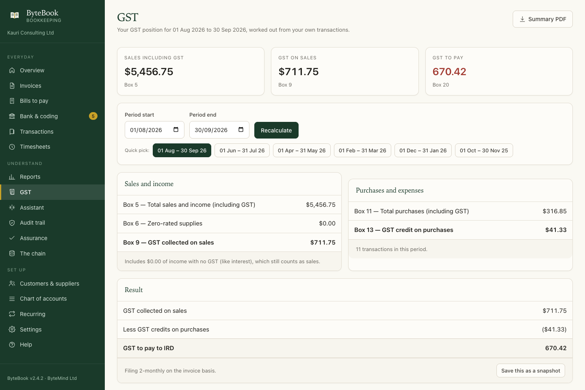
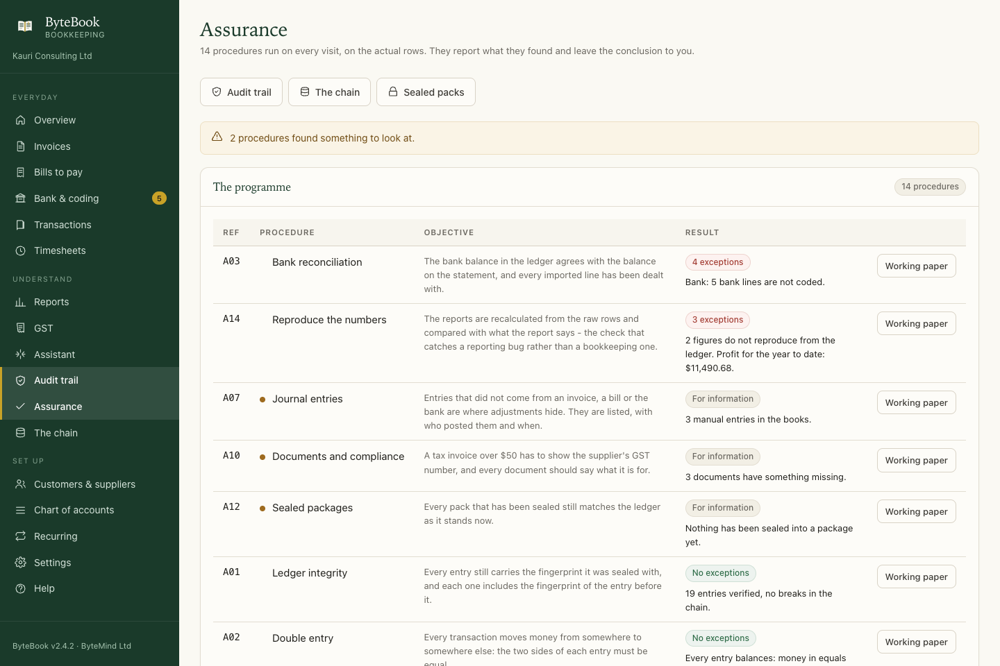

Train your team on a business that cannot be hurt
ByteBook keeps a New Zealand business's books: invoices, GST, expenses, bank import and reports, in one app, on one computer. For an accounting or audit practice that makes it a training environment. There are twelve businesses to run, a record that shows every correction, and fourteen assurance procedures your staff can run against the real entries.
Desktop app for macOS · Runs offline · No account, no cloud, nothing sent anywhere

A learner cannot break a client's books, because there is no client
Every training exercise runs against a simulated business in its own set of books. Nothing carries over, and one session cannot damage the next.
A business to run, not a spreadsheet to read
The learner sends real invoices, codes a real bank statement, files a GST period and reads reports that were computed from the entries they posted. The awkward cases are in the data on purpose: a late payer, a duplicated payment, a manual journal.
Every mistake is visible, and none of it is destructive
Nothing is deleted or edited. A correction is a void: the original and its mirror image both stay, and the reports stop counting them. A learner sees what a proper correction looks like, because the program will not let them do it any other way.
The reasoning is checked against the standards
The training handbook names the accounting or auditing standard behind every step, by paragraph, and every reference can be followed to the publisher's own document. 71 references, each one verified against the text it cites.
Different trades, different tax settings, different problems
A business that is not registered for GST teaches something a registered one cannot. So does a six-monthly return, or exempt rent beside taxable sales.
| Business | GST | Return | What it makes you practise |
|---|---|---|---|
| Bright Cuts hairdressing |
Not registered | — | Invoicing and reporting with no GST anywhere in the books |
| Kōwhai Advisory consulting |
Registered | Monthly, payments basis | A late payer, and GST that follows the money rather than the invoice |
| Tasman Builders Ltd construction |
Registered | Two-monthly, invoice basis | Stage payments: one contract, several invoices, revenue recognised as the work is done |
| Harbour Cafe & Co hospitality |
Registered | Monthly | High volume of small sales, and a vehicle available for private use |
| Loom & Light online retail |
Registered | Two-monthly | Refunds and returns that reverse revenue after the fact, and a void to correct |
| Marine Parade Rentals property |
Registered | Two-monthly | Exempt rent beside taxable supplies, where the return needs care |
| Whirinaki Contracting horticulture |
Registered | Six-monthly | A long return period, seasonal costs, and a work vehicle with private use |
| Foundry Labs software |
Not registered | — | A pre-revenue business: costs only, and a balance sheet that shows who is funding it |
| Marine Parade Dental health |
Registered | Monthly | Security switched on: four roles, passwords, and a wrong password to handle |
| Ngata Plumbing Ltd trades |
Registered | Two-monthly | A busy bank statement with many lines to code, and a short payment term |
| Pacific Trading Ltd wholesale |
Registered | Six-monthly | Stock bought and sold, a large import, and a June balance date |
| Precision Engineering Ltd engineering |
Registered | Two-monthly | Amounts chosen to break the arithmetic that rounds the wrong way |
Every simulation runs the real application rather than writing to the database directly, so a learner and a simulation travel through exactly the same pages.
What a learner actually does
The same sequence a month follows in a real practice.

Coding is where the judgement lives
Most small-business bookkeeping errors are made on this screen, at speed, hundreds of times. The learner has to decide what each line was for, and the program tells them how many decisions are still outstanding.
Then the second half of the screen turns coding into a test: the learner enters the closing balance and date from the bank statement, and ByteBook says whether its own balance agrees.
- A reconciliation is not arithmetic housekeeping. It is the check that ties the books to something outside them.
- A balance can agree while twenty lines sit uncoded, which is not a reconciliation.
The return is built from the ledger, not typed in twice
Choose a period and ByteBook fills the Inland Revenue boxes from the transactions in the books. Each figure can be traced back to the entries that produced it, and the page states whether the period is on the invoice basis or the payments basis.
Before filing, the learner saves a snapshot of what was filed. That snapshot is what the GST reconciliation procedure compares the ledger against later.
- Box 5 is total sales and income including GST. Box 9 is the GST itself.
- GST collected is never income. It is money held for Inland Revenue.
- Income tax is a different question entirely, and has its own working papers.

Fourteen procedures that run themselves, and report what they found
Each one runs on every visit, against the actual entries, and offers a working paper your staff can hand to somebody else.

A01Ledger integrityEvery entry still matches the fingerprint it was sealed withA02Double entryThe two sides of every entry are equalA03Bank reconciliationThe ledger agrees with the statement, and every line is dealt withA04DebtorsMoney owed is real, correctly aged, and not overpaidA05CreditorsWhat the business owes is recorded, and no bill is paid twiceA06GST reconciliationThe return agrees with the ledger, and with what was filedA07Journal entriesManual entries, listed with who posted them and whenA08Duplicate paymentsThe same amount to the same supplier inside a weekA09Cut-offEntries dated in the future, or inside a closed periodA10Documents and complianceTax invoices over $50, and documents missing their detailsA11ExpensesRound numbers, large one-off costs, and costs that look personalA12Sealed packagesEvery closed period still matches the ledger as it stands nowA13Access and housekeepingWho can sign in, when the last backup was takenA14Reproduce the numbersThe reports recalculated from the raw rowsThe procedures report what they found and leave the conclusion to the person. That is the difference between a procedure and an opinion, and it is the habit the handbook teaches.
A record that shows when it has been changed
Every entry carries a SHA-256 fingerprint that includes the fingerprint of the entry before it. Change an old number and the chain says so, because every fingerprint after it stops matching. A closed period is sealed the same way, one level up.
An auditor in training gets to see both sides of that: what an intact record looks like, and what it looks like when somebody edits the database outside the application.
- Voiding a mistake does not break the chain. Editing the original would.
- The chain proves integrity, not accuracy. Both are needed, and the handbook keeps them apart.

A handbook that cites its sources, and a library that proves them
Anyone can say a rule is right. The useful question is whether a reader can check it.
Where the references come from
New Zealand's accounting and auditing standards are published free by the External Reporting Board: NZ IFRS, which carry the IASB's text, and the ISAs (NZ) and PES standards, which carry the IAASB's. The IAASB Handbook itself is published free by IFAC.
ByteBook's library downloads those documents, stores them, and records a fingerprint for each. A reference in the handbook names the standard, the paragraph, the publisher, the address of the document and the fingerprint of the copy that was read.
What we publish, and what we do not. The standards belong to their publishers, and we do not reproduce them. The handbook quotes short passages with attribution and links to the source.
Three checks run before publication. Every reference must name a standard in the library. Every quoted paragraph must be found at that number in the publisher's own text. Every document must still match the fingerprint recorded when it was downloaded.
That last one is the useful one. If a publisher issues a new version, the fingerprint stops matching, and the handbook is re-checked before anything is republished.
A course that goes with the software
Twenty-three chapters, written to be read. Part 1 sets up a training business. Part 2 is the daily work. Part 3 is the audit side. Part 4 maps every screen to the standard behind it, and Part 5 is twelve sessions, one per business, with a marking note for each. Start here, or open it on its own.
This is the handbook itself, on this page. Turn a page below and the chapter list keeps up. Every citation in the text opens the standard, the paragraph and the document it was checked against. The whole book on one page is there for printing.
Reads like a book
Contents, full-text search, a reading position that comes back, and keyboard paging. Nothing to install and no account.
References you can follow
A citation names the standard, the paragraph and the publisher, and quotes the words it rests on. One click and you are reading the source.
Plain language first, then the rule
What to do, what it means for the numbers, then the paragraph that says so. Where the answer is a judgement rather than arithmetic, it says that too.
Firms training accounting and audit staff
And small businesses that want their own books on their own computer.
New accounting staff
A month of real work in a business that behaves like one: a payment arrives late, a bill is paid twice, and the bank does not agree at the first try.
Audit staff in training
Fourteen procedures, what each one is for, and what an exception looks like when the books are wrong. Then a period they can seal and deliberately break.
Small businesses
Invoicing, GST, expenses and reports, with the books on the owner's own computer. One file, no account, and an audit trail that cannot be quietly edited.
What ByteBook is not. It works out GST figures from the transactions you code; whether a particular supply is taxable is a question about that supply, and Inland Revenue is the authority for it. It prepares the tax working papers; it does not file them. It reports what the books contain; it does not conclude.
About the app itself. ByteBook runs on macOS as a
desktop application, on 127.0.0.1, with the books in one
SQLite file and API keys in the macOS Keychain. It is signed ad-hoc, so
the first time it opens on a Mac that has not seen it, macOS may ask you to
confirm. The optional assistant is off by default, never changes a number,
and can run with no internet connection at all.